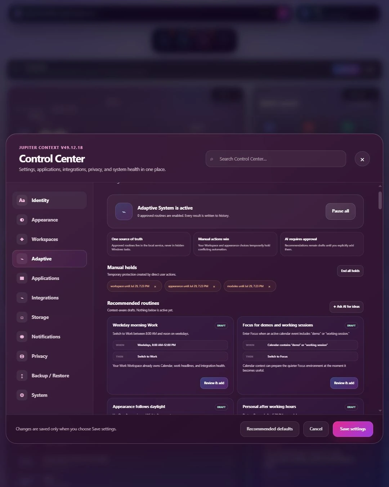
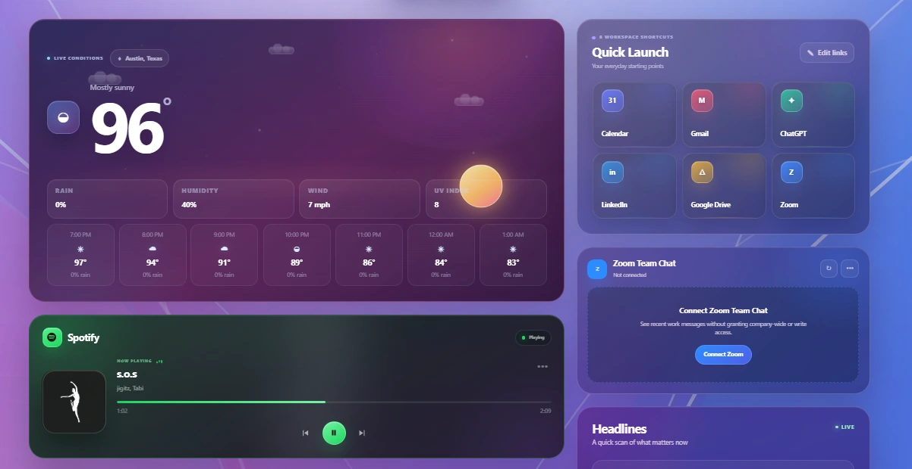
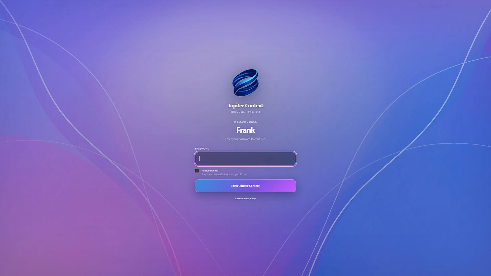

01
Work
Calendar, headlines, files, communications, and system health stay visible when the day is moving.

Jupiter Context for Windows · V49.12.18
One adaptive environment for your workspaces, files, meetings, media, applications, and AI.
Local-first. User-controlled. Built for Windows.
Your day, already assembled
Jupiter Context brings your live environment together without flattening it into a pile of widgets. Every module belongs to a workspace, carries state, and stays under your control.

One system. Three environments.
Work, Personal, and Focus each retain their own applications, layout, Dock, appearance, links, and notification behavior.
Calendar, headlines, files, communications, and system health stay visible when the day is moving.
Media, interests, photos, countdowns, and the things you actually look forward to.

A quieter environment that keeps the tools you need and removes everything competing for attention.

Control Center
Identity, appearance, workspaces, applications, integrations, privacy, backups, and adaptive routines live in one legible system surface.

Applications become capabilities
Jupiter Context does not ask you to abandon the software that already works. It gives those tools a shared language, health model, and place inside the system.

Identity and security
Jupiter Context includes a dedicated password-protected sign-in layer designed to prevent unauthorized access to your local environment. Trusted-device sessions and a recovery key make secure access practical while keeping authentication and workspace data local to the device.

Windows alpha
The current pre-alpha validates the complete Jupiter Context experience before the first wider Windows release.